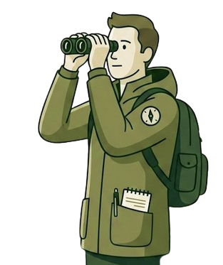

Avifaunistische Linienkartierungen nach aktuellem Methodenstandard — für Umweltplanung und artenschutzrechtliche Prüfungen.
Ich führe avifaunistische Linienkartierungen für Planungsbüros durch.
Schwerpunkt meiner Arbeit ist die standardisierte Brutvogelerfassung im Gelände, mittels Protokollierung nach Südbeck-Methodenstandard und GIS-gestützter Auswertung. Weiterhin biete ich die Erfassung von Reptilien, Amphibien, Horste und Baumhöhlen an.
Mein Studium der Umweltwissenschaften hat mir das theoretische Fundament geliefert – doch echter Naturschutz entscheidet sich in der Praxis. Ich arbeite an der Schnittstelle von Bau und Umweltschutz, um wissenschaftlich fundierte Daten zu liefern. Mein Ziel ist es, Projekte professionell zu begleiten und durch präzise Kartierungen dafür zu sorgen, dass unsere Tier- und Pflanzenwelt im Planungsalltag rechtssicher und effektiv geschützt wird.
Mein Schwerpunkt liegt in der Durchführung ökologischer Kartierungen für komplexe Linieninfrastrukturen, wo ich bereits umfassende Projekte im Bereich von Starkstromleitungen für Rechenzentren und weitere Medien realisiert habe. Zudem verfüge ich über fundierte Erfahrung in der ökologischen Baubegleitung (ÖBB) und habe in diesem Rahmen zahlreiche Baustellen, erfolgreich kontrolliert und begleitet.

Standardisierte Erfassung nach wissenschaftlichem Methodenstandard (Südbeck et al. 2005). Protokollierung von Brutvögeln, GPS-Verortung aller Beobachtungen, geeignet als Zuarbeit für landschaftspflegerische Fachbeiträge.
Systematische Suche und Dokumentation von Greifvogel- und Großvogelhorsten in den Wintermonaten. Essential für die frühzeitige Konfliktvermeidung bei Bau- und Forstprojekten.
Erfassung von Herpetofauna durch standardisierte Begehungen an Gewässern und Landhabitaten. Nachweis von Zielarten mittels Sichtbeobachtung und Kescherfängen.
Erfassung und Bewertung von Spechthöhlen und potenziellen Fledermausquartieren. Auf Wunsch inklusive digitaler Endoskop-Kontrolle zur Überprüfung des aktuellen Besatzstatus.
Flächendeckende Erfassung und Bewertung von Biotoptypen nach Landesbiotopschlüssel (z. B. BBK Brandenburg / BTLNK Berlin). Grundlage für Eingriffs-Ausgleichs-Bilanzen und landschaftspflegerische Begleitpläne.
Betreuung von Bau- und Fällmaßnahmen in ökologisch sensiblen Bereichen. Kontrolle von Gehölzen und Strukturen vor Beginn der Maßnahme, Dokumentation und Kommunikation mit Bauleitungen — rechtssicher nach §44 BNatSchG.
Aufbereitung der Kartierungsdaten mit QGIS: Reviermittelpunkte, einfache Verbreitungskarten, Export in gängige Formate (Shapefile, GeoPackage, PDF).
Erfassung nach den behördlich anerkannten Methodenstandards (Südbeck et al. 2005) als rechtssichere Grundlage für Planungsverfahren.
Frühbegehungen in den aktivsten Morgenstunden ab Sonnenaufgang; Spätbegehungen fangen dämmerungs- und nachtaktive Arten am Abend ab.
Begehungen werden über die Brutsaison (März bis Juli) verteilt — frühe Standvögel im Frühjahr, späte Zugvögel im Sommer werden so lückenlos erfasst.
GPS-gestützte Aufnahme direkt im Gelände. Brutvögel werden mit den offiziellen Brutzeitcodes dokumentiert, weitere Artengruppen nach ihren spezifischen Vorgaben.
Aufbereitung der Rohdaten zu Reviermittelpunkten, Raumnutzungskarten und Habitatanalysen — als direkt verwendbare GIS-Layer (Shapefile, GeoPackage).
Klar strukturierte Arttabellen, digitale Nachweiskarten und fachliche Zuarbeit für den Artenschutzrechtlichen Fachbeitrag (ASP) — ohne unnötigen Overhead.
Begehungen in der laubfreien Zeit (Februar/März) zur Identifikation von Horsten großer Greif- und Schreitvögel: Rotmilan, Schwarzmilan, Mäusebussard, Weißstorch.
Überprüfung bekannter und neu gefundener Horste auf Besatz während der Brutzeit. Dokumentation von Anwesenheit, Balzverhalten und Nestmaterial.
Exakte Einmessung aller Horste per GPS, Aufnahme von Baumart, Höhe und Exposition. Übergabe als GIS-Layer mit Schutzradien nach §44 BNatSchG.
Bilddokumentation zur Nachvollziehbarkeit und als Beleg für Behörden. Georeferenzierte Fotos, sofern der Standort eine Aufnahme erlaubt.
Erfassung laichender Amphibien an Gewässern durch Keschern und Sichtbeobachtung. Schwerpunkt auf Kammmolch, Knoblauchkröte und weiteren planungsrelevanten Arten.
Einsatz von Reusenfallen für einen Begehungsnachweis von Molchen. Fallen werden abends gesetzt und morgens geleert — Tiere werden bestimmt, gezählt und sofort freigelassen.
Auslage von Kunstverstecken (Wellpappe, Bitumenplatten) zur Reptilienerfassung. Kontrolle bei geeigneten Temperaturbedingungen auf Zauneidechse, Ringelnatter u.a.
Rufnachweise von Laubfrosch und Unken sowie Sichtbeobachtung wandernder Amphibien an geeigneten Laichgewässern bei Temperaturen über 8°C.
Begehung des Bestands mit Fernglas und ggf. Teleskopstange zur Identifikation von Höhlen, Spalten und Rindentaschen mit Quartierpotenzial für Vögel und Fledermäuse.
Einordnung der Strukturen nach Höhlentyp (Specht-, Faulhöhle, Spalte, Astausbruch) und Eignung als Brut- oder Tagesversteck. Dokumentation von Baum-ID, Höhe und Exposition.
Überprüfung auf aktuellen Besatz vor Fällmaßnahmen. Endoskopkontrolle bei erreichbaren Höhlen, Beobachtung auf Ein- und Ausflug bei unzugänglichen Strukturen.
GPS-Einmessung aller kartierten Strukturen, Übergabe als GIS-Layer.
Systematische Begehung des Untersuchungsgebiets zur direkten Ansprache und Abgrenzung von Biotoptypen. Erfassung von Vegetationsstruktur, Nutzung und prägenden Arten vor Ort.
Codierung nach dem jeweiligen Landesbiotopschlüssel (BBK Brandenburg bzw. BTLNK Berlin). Dadurch direkte Einbindbarkeit in die Eingriffs-Ausgleichs-Bilanzierung und den LBP.
Polygonerfassung der Biotoptypen direkt auf dem Gelände per GPS. Minimaler Nachbearbeitungsaufwand durch vorkonfigurierte QGIS-Projektstruktur.
Ökologische Bewertung der Biotoptypen nach behördlichen Vorgaben, Flächenberechnung und Übergabe als GIS-Layer sowie tabellarische Zusammenstellung — als direkte Zuarbeit für den LBP oder UVP-Bericht.
Begehung des Eingriffsbereichs vor Baubeginn auf aktuellen Besatz relevanter Arten. Besondere Prüfung auf Vogel- und Fledermausquartiere in Gehölzen und Gebäuden, Reptilienvorkommen auf Offenflächen.
Direkte Anwesenheit bei Fällarbeiten in der sensiblen Saison. Kontrolle von Höhlen und Strukturen unmittelbar vor dem Eingriff, Einleitung von Schutzmaßnahmen oder fachliche Freigabe.
Klare fachliche Rückmeldung direkt im Gelände. Pragmatische Lösungsfindung bei unvorhergesehenen Konflikten unter Einhaltung der artenschutzrechtlichen Anforderungen nach §44 BNatSchG.
Lückenlose Protokollierung aller relevanten Befunde und Maßnahmen mit Zeit- und GPS-Stempel. Übergabe als behördentaugliches Baubegleitprotokoll mit Fotodokumentation.
Für Anfragen zu Linienkartierungen oder Geländearbeit als Subunternehmer stehe ich gerne zur Verfügung.
Kontaktaufnahme telefonisch · Einsatzgebiet: Deutschland
Malte Lenzen
Maximilianstraße 25
10317 Berlin
Telefon: +49 [PLATZHALTER]
E-Mail: umweltdienste.babelsberg@posteo.de
Freiberufliche Tätigkeit im Bereich avifaunistischer Geländeerfassungen. Kein eingetragenes Gewerbe. Keine Umsatzsteuer-ID (Kleinunternehmerregelung §19 UStG).
Die Inhalte dieser Website wurden mit größter Sorgfalt erstellt. Für die Richtigkeit, Vollständigkeit und Aktualität der Inhalte kann jedoch keine Gewähr übernommen werden.